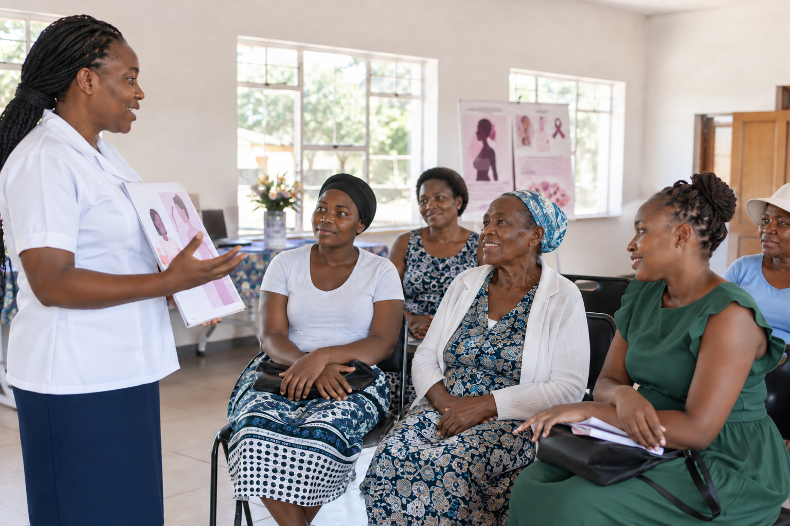
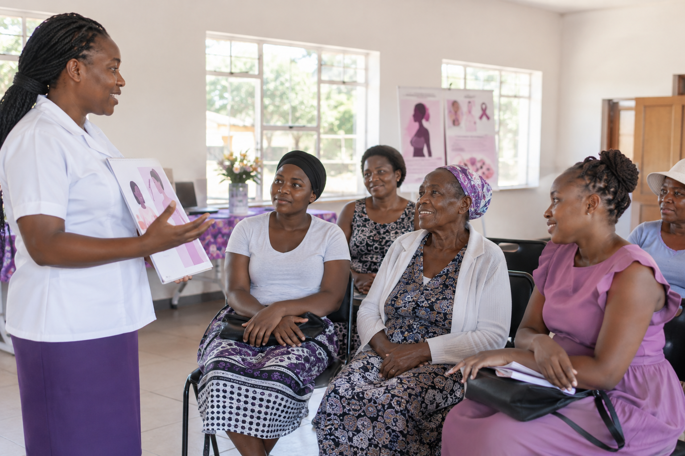

Community cancer awareness sessions
Local sessions help women learn about symptoms, screening and where to ask for medical advice.

Local sessions help women learn about symptoms, screening and where to ask for medical advice.
Questions to take to your next clinic visit, including when to screen and what happens after a test.
Read recent GCFZ updates on cancer information, community work and patient support.
Find information about cancer symptoms, screening, diagnosis and treatment. These pages can help you prepare questions for a doctor or nurse.
Access GCFZ information for researchers, health workers and organisations interested in cancer education and community programmes.

For women and communities
GCFZ brings cancer education closer to women and families through community conversations, practical resources and connections to care.
Shop awareness apparelCommunity education that helps women understand symptoms, risk factors and when to seek medical advice.
Encouraging regular checks and timely referrals so cancer can be found earlier and treated sooner.
Guidance for patients, families and caregivers navigating diagnosis, treatment and recovery.
About GCFZ
The Gynaecological Cancer Foundation Zimbabwe exists to raise awareness, promote education and connect communities to information that supports prevention, early diagnosis and compassionate care.
To build a Zimbabwe where women and families can access reliable cancer information, screening guidance and practical support without fear or stigma.
About Cancer
Clear information on cancer, prevention, screening, diagnosis and treatment can help patients and caregivers make informed decisions with health professionals.
Cancer Types
Shop
Comfortable everyday shirts featuring the purple awareness ribbon.
Practical accessories for awareness events and everyday use.
Every purchase supports cancer awareness, screening and patient-support activities.
Visit the shopNews and Events
GCFZ outreach activities focused on early warning signs and where to seek help.
Information sessions supporting women to ask informed questions about screening.
A support-focused event for families walking alongside loved ones with cancer.
Contact Us
For awareness programmes, partnerships, patient guidance or community events, contact the Gynaecological Cancer Foundation Zimbabwe team.